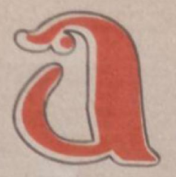

<mat-toolbar color="primary">
  
  <div><span>The Mirror</span></div>
  <span class="example-fill-remaining-space"></span>

  <div class="tm-nav-bar" *ngIf="displayMobileNavbar">
    <button
      mat-button
      color="accent"
      [routerLink]="'/home'"
      (click)="closeNavWindow($event)"
    >
      Home
    </button>
    <button
      mat-button
      color="accent"
      [routerLink]="'/products'"
      (click)="closeNavWindow($event)"
    >
      Products
    </button>
    <button
      mat-button
      color="accent"
      [routerLink]="'/contact'"
      (click)="closeNavWindow($event)"
    >
      Contact
    </button>
  </div>
  <mat-icon class="tm-hamburger" (click)="showNavigation($event)">{{
    icon
  }}</mat-icon>
</mat-toolbar>

<router-outlet></router-outlet>
